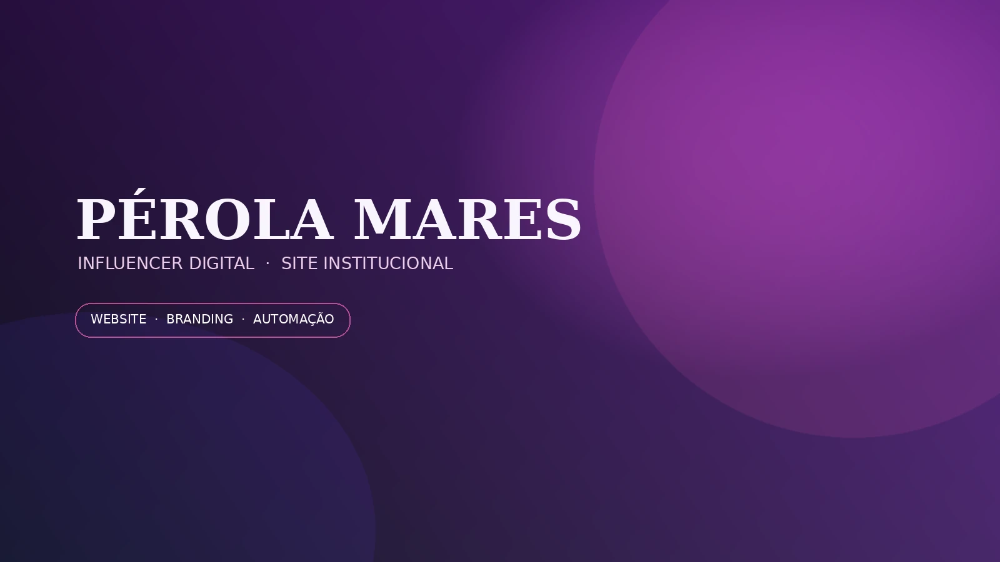

CASE DE SUCESSO · INFLUENCER DIGITAL
A YANSIX criou o site institucional da Pérola Mares, estruturando identidade visual, apresentação profissional e automação para contatos com leads.
O CLIENTE

O projeto foi desenvolvido para transformar a presença da Pérola Mares em um ativo digital próprio: uma identidade visual coerente, um site institucional e uma estrutura de contato preparada para receber leads.
O DESAFIO
A necessidade era organizar a comunicação em um espaço próprio, com identidade visual consistente e caminhos claros para quem quisesse conhecer o trabalho, acompanhar a marca ou entrar em contato.
SOLUÇÃO APLICADA
Página própria para apresentar a Pérola Mares, sua atuação e seus principais pontos de contato.
Criação e aplicação de identidade visual para dar unidade à comunicação da marca pessoal.
Estrutura para receber e organizar contatos de pessoas interessadas em falar com a influencer.
PROCESSO
Definição de uma linguagem visual própria para a presença digital.
Organização das informações para facilitar a navegação e a apresentação da marca.
Aplicação da identidade em uma interface institucional coerente.
Formulários e fluxos para transformar visitas em contatos organizados.
RESULTADO
Pérola Mares passou a contar com uma presença digital própria, com identidade visual consistente, site institucional e estrutura de contato para oportunidades e leads.